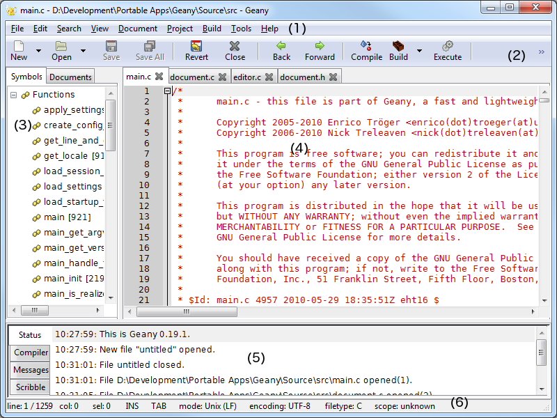

Geany
|
Geany work environment

Geany syntax highlighting

Geany code folding (1/2)
From Edit > Preferences menu

Geany code folding (2/2)

Geany auto completion
From Edit > Preferences menu

Exercise
Create a file called Test.java with Geany and add the following code. Try some word auto completion and keybindings with it. Finally, compile it and run it.
public class Test
{
public static void main(String[] args)
{
System.out.println("Hello");
}
}
Exercise
Create a file called test.c with Geany and add the following code. Try some word auto completion and keybindings with it. Finally, compile it and run it.
#include
int main()
{
printf("Hello");
return 0;
}